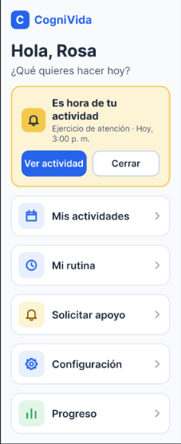
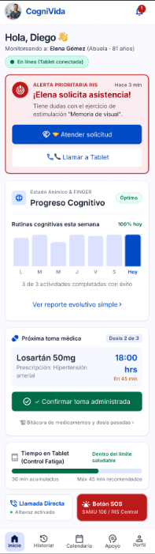
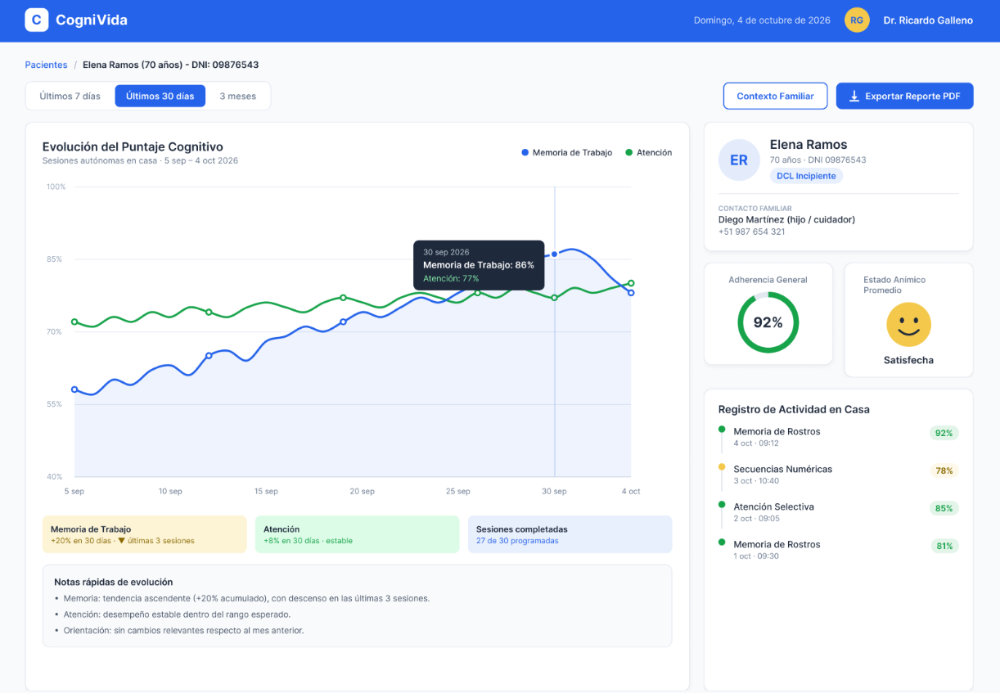

Nuestra misión
Brindar soluciones tecnológicas innovadoras y accesibles de estimulación cognitiva y monitoreo en el hogar, promoviendo la autonomía del adulto mayor con Deterioro Cognitivo Leve y reduciendo la sobrecarga de cuidado en sus familias.
ODS 3 · Salud y Bienestar
Somos una plataforma web SaaS alineada con el ODS 3: Salud y Bienestar. Acompañamos a adultos mayores con Deterioro Cognitivo Leve (DCL), a sus cuidadores familiares y a los profesionales de la salud mediante ejercicios de estimulación cerebral, alertas tempranas y reportes de evolución.
Somos un startup peruano que diseña soluciones digitales accesibles para reducir el impacto del Deterioro Cognitivo Leve y la sobrecarga de los cuidadores familiares.
Brindar soluciones tecnológicas innovadoras y accesibles de estimulación cognitiva y monitoreo en el hogar, promoviendo la autonomía del adulto mayor con Deterioro Cognitivo Leve y reduciendo la sobrecarga de cuidado en sus familias.
Ser el startup referente en el Perú y Latinoamérica en el desarrollo de soluciones digitales de salud y bienestar para la tercera edad.
Ofrecemos un módulo diferente para cada usuario, con interfaces de alta accesibilidad y baja carga cognitiva.
Ejercicios de memoria, atención y orientación para el adulto mayor.
Adulto mayorRutina diaria con recordatorios y lectura en voz alta.
Adulto mayorPanel móvil del cuidador con alertas de omisión y botón de ayuda.
Cuidador familiarBitácora de medicamentos compartida entre familiares.
Cuidador familiarDashboard clínico con gráficos longitudinales y reportes PDF.
Profesional de la saludHU-013 · Seleccionar una actividad cognitiva
Toca una opción para ver en qué consiste el ejercicio y su nivel sugerido.
Tu navegador no puede leer las instrucciones en voz alta. Puedes leerlas en el recuadro de arriba.
Simulación: el nivel mostrado es un ejemplo fijo; no se guarda tu elección. La voz depende del navegador.
HU-014 · Recibir retroalimentación al finalizar un ejercicio
Responde con calma: no hay límite de tiempo.
Simulación: las respuestas no se guardan; el resumen del día solo cuenta los intentos de esta visita.
HU-016 · Personalizar el tamaño de los elementos
Simulación: la preferencia se guarda solo en este navegador (localStorage).
HU-027 · Registro y programación de la bitácora de medicamentos
Horario programado: 08:00 a. m. · 1 tableta con el desayuno.
Pendiente de confirmar
Simulación: el medicamento es ficticio y la confirmación no se guarda ni se envía.
Nuestros proyectos contribuyen a la meta del ODS 3 de garantizar una vida sana y promover el bienestar de todas las personas en todas las edades.
Programa de estimulación cognitiva diaria basado en el modelo preventivo LatAm-FINGERS, sin límites de tiempo punitivos para el adulto mayor.
Red de apoyo familiar que comparte turnos, rutinas y medicamentos para reducir la sobrecarga del cuidador.
Reportes de evolución para centros de atención primaria que facilitan la detección temprana de declive cognitivo.
Conoce cómo se ve CogniVida en cada dispositivo.



Lo que dicen nuestros usuarios durante las entrevistas:
"Ahora hago mis ejercicios sola y con letras grandes, sin que nadie me apure."
— Elena, adulta mayor, 72 años
"Recibo una alerta si mi mamá no hizo su rutina y ya no dependo de notas en papel para sus medicinas."
— Carmen, cuidadora familiar
"El gráfico de evolución me da datos objetivos para ajustar el tratamiento en la consulta."
— Dr. Ramírez, médico de atención primaria
HU-008 · Solicitar apoyo a mi cuidador
Lima, Perú
Teléfono: (01) 555-0123
Correo: contacto@cognivida.pe
¿Pedir ayuda a Diego con la actividad Memoria visual?
Simulación: el formulario no envía ni guarda datos. Al completarlo verás una pantalla de confirmación de ejemplo.